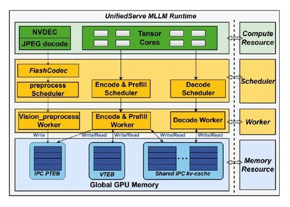

Сегодня разбираем статью, о том, как ускорить мультимодальный инференс, особенно когда на вход подаётся длинное видео.
Проблема складывается из нескольких факторов. MLLM становятся всё популярнее, мы хотим обрабатывать текст, картинки, видео, — но сервинг таких моделей очень дорогой. Нужно одновременно хорошо утилизировать GPU и быстро отдавать пользователю ответ. А с видео всё становится ещё хуже — препроцессинг долгий, особенно для длинных роликов. В итоге страдают TTFT (time to first token) и TBT (time between tokens).
Если в обычных LLM у нас есть prefill и decode, то в MLLM добавляются ещё две тяжёлые стадии до генерации:
- decoding видео и изображений,
- vision encoding (ViT / SigLip).
Отсюда две ключевые проблемы.
1) Видеодекодирование сильно увеличивает TTFT. CPU-декодинг плохо масштабируется, а GPU-декодеры обычно оптимизированы под throughput, а не под latency одного запроса, нам важно чтобы пользователь быстро получил ответ на свой запрос.
2) Vision encoder. Это отдельная compute-heavy-стадия, которая конкурирует за GPU с decode-частью и из-за этого увеличивается TBT. Просто вставить её в обычный пайплайн нельзя, так как начинаются конфликты за ресурсы.
В статье авторы по очереди решают эти проблемы.
FlashCodec
Главная идея — распараллелить одно видео на несколько GPU, а не просто обрабатывать разные видео параллельно. Видео хранится не как набор независимых кадров, а как compressed bitstream, разбитый на GOPs (Group of Pictures). Внутри такой группы кадры зависят друг от друга, но сами они между собой независимы.
Отсюда решение FlashCodec: видео делим на GOPs, распределяем их по GPU, внутри группы картинок декодируем последовательно, а между ними получаем параллелизм.
Дополнительно вводят stall-free scheduling — видео больше не рассматривается как одна задача. Планирование идёт на уровне GOP, и как только NVDEC освобождается, ему сразу отдаётся следующий GOP.
Ещё важный момент — память. В обычных системах при асинхронном декодировании память под кадры резервируют заранее, из-за чего легко можно упереться в OOM. Здесь же запрос принимают, ставят в очередь, декодируют и только после декодинга на ранке аллоцируют GPU-память под результат.
В итоге FlashCodec ускоряет обработку длинного видео и снижает TTFT.
UnifiedServe
Вторая проблема — конкуренция encode/prefill и decode за GPU. Тут есть два стандартных подхода.
1) Monolithic, когда все GPU в находятся одном runtime. Утилизация высокая, но encode начинает мешать decode, из-за этого растёт TBT.
2) Split, когда GPU жёстко делятся между encode/prefill и decode. Decode защищён, но ухудшается утилизация и появляются дополнительные оверхэды, например KV-cache transfer.
Авторы объединяют лучшее из подходов в UnifiedServe. Пайплайн бьют на три независимых воркера — preprocessing, encode/prefill и decode — связывают их через буферы и передают данные не целиком, а чанками. Каждый воркер забирает их по мере готовности. Можно удобно передавать информацию при асинхронной работе.
Но остаётся конкуренция за GPU, поэтому добавляют оркестрацию: encode и prefill получают ограниченный «бюджет токенов» и не могут занять весь компьют, за счёт чего decode остаётся изолированным и при этом сохраняется общий пул GPU. Так одновременно улучшаются TTFT, TBT и утилизация.
На экспериментах решения выигрывают по latency и throughput по сравнению с существующими.
Разбор подготовил
CV Time
